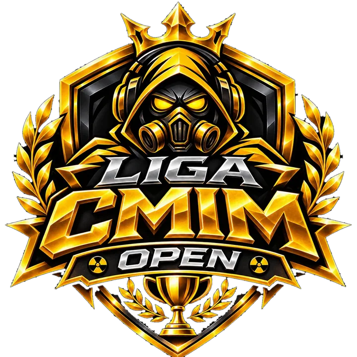
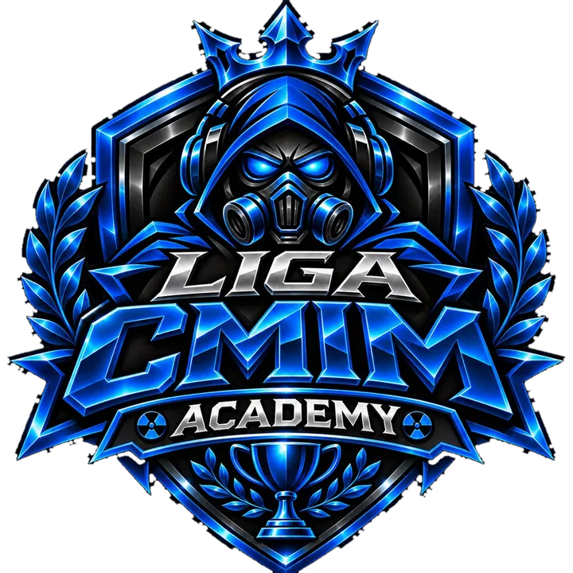
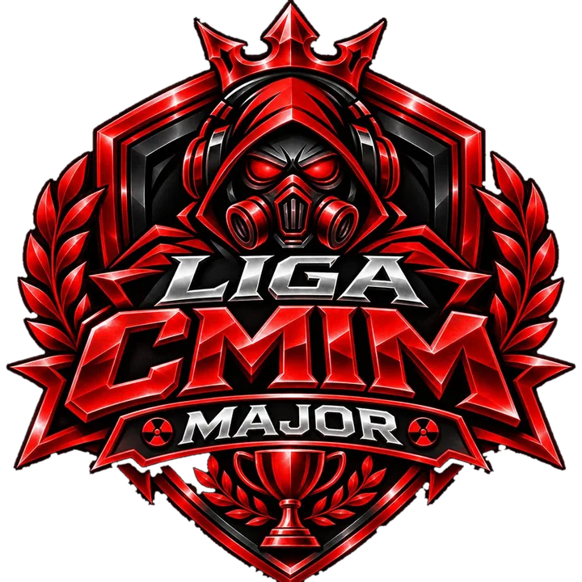

CMIM OPEN
A porta de entrada do circuito, criada para dar visibilidade a equipes interessadas em competir no CMIM.
CATEGORIA DE ENTRADA · EM PLANEJAMENTO
VER EVENTOS OPEN ↓Open, Academy e Major: o universo das competições de equipes do CMIM. Crie seu time, reúna cinco jogadores, participe dos eventos oficiais e acompanhe tabelas, rodadas e chaveamentos no mesmo ambiente.
O cenário competitivo do CMIM reúne três ligas com identidades próprias. Diferente do in-house, aqui os times se inscrevem e disputam as competições de equipes.

A porta de entrada do circuito, criada para dar visibilidade a equipes interessadas em competir no CMIM.

A liga de desenvolvimento para equipes em evolução, com foco em constância, treino e crescimento competitivo.

O palco principal do circuito, voltado às competições de maior destaque do CMIM.
Cadastre sua equipe, defina o capitão, convide atletas por rota e prepare o elenco para os campeonatos do circuito.
Cadastre um time e convide os cinco jogadores antes de disputar um campeonato.
Aceite ou recuse convites dos capitães para completar seu elenco.
Competições publicadas pela organização. Consulte o status de inscrição, o calendário e os formatos definidos para cada evento.
Escolha um evento para explorar confrontos por rodada, placares, ranking de equipes e resultados homologados.
Selecione um campeonato para ver os jogos e o formato da disputa.